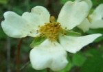
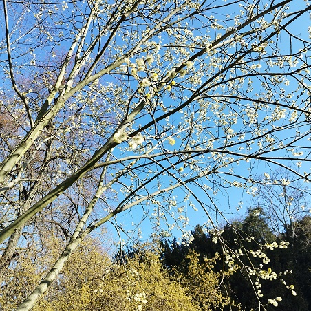
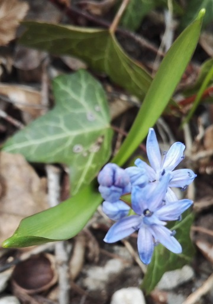
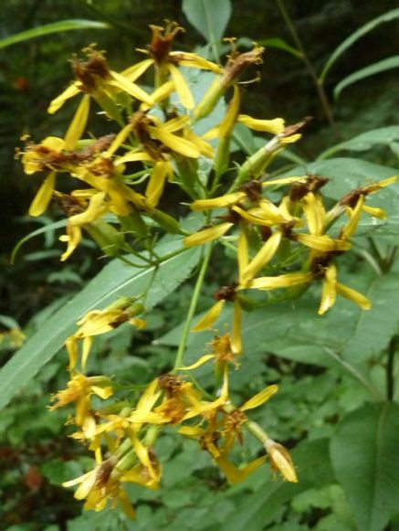
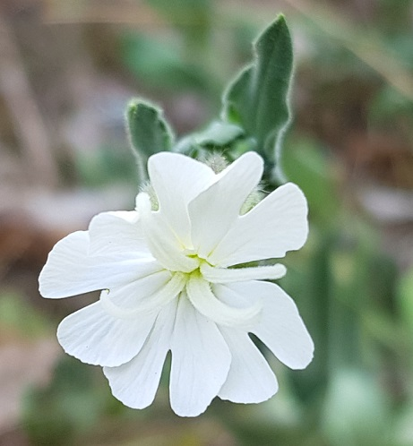
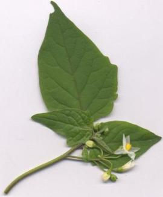
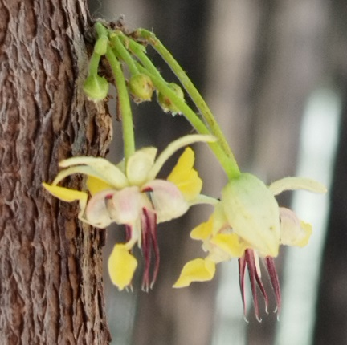
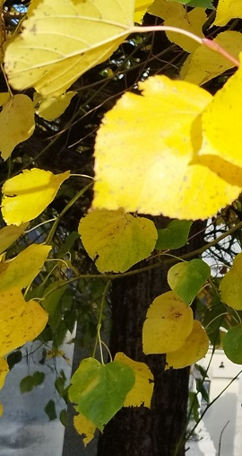

Noms latinsNoms françaisNoms vernaculairesSynonymesLe genre grammatical en BotaniqueCodes de nomenclature
Index
des noms latins des fleurs
et autres êtres vivants

de Linné
Q 
Toutes les espèces du genre Quercus sont inscrites sur la Liste des espèces modèle (sic) pour la recherche
R
- Ramalina farinacea
Ramalina fastigiata
Ramalina fraxinea
Ranunculus aconitifolius
Ranunculus acris
Ranunculus auricomus
Ranunculus bulbosus
Ranunculus ficaria
Ranunculus flammula
Ranunculus fluitans
Ranunculus gramineus
Ranunculus lingua
Ranunculus ophioglossifolius
Ranunculus repens
Ranunculus sardous
Ranunculus sceleratus
Ranunculus trichophyllus
Raphanus raphanistrum
Reseda lutea
Reseda luteola
Reynoutria japonica
Rhamnus cathartica
Rhinanthus alectorolophus
Rhinanthus minor
Rhus typhina
Ribes rubrum
Robinia pseudoacacia
Rorippa amphibia
Rorippa sylvestris
Rosa arvensis

Rosa canina
Rubia peregrina
Rubus caesius
Rubus canescens
(R. aetnicus Weston, 1770 ou Cupani ex Weston ?)
Rumex acetosa
Rumex acetosella
Rumex crispus
Rumex obtusifolius
Rumex sanguineus
Ruscus aculeatus
Ruta graveolens
S
- Sabulina tenuifolia
Sagittaria sagittifolia
Salix caprea
Salix caprea, saule marsault,
Paris, Buttes Chaumont, 3 mars 2026 Salix cinerea
Salix fragilis
Salix purpurea
Salix repens
Salvia pratensis
Sambucus ebulus
Sambucus nigra
Sambucus racemosa
Sanguisorba minor
Sanguisorba officinalis
Sanicula europaea
Saponaria officinalis
Saxifraga granulata
Saxifraga tridactylites
Scabiosa columbaria
Scandix pecten-veneris
Schedonorus arundinaceus
Schoenoplectus lacustris
Schoenus nigricans
Scilla bifolia

Scirpus sylvaticus
Scorzonera humilis
Scrophularia auriculata
Scrophularia nodosa
Scutellaria galericulata
Scytodes thoracica (une araignée)
Sedum acre
Sedum album
Sempervivum tectorum
Senecio inaequidens
Senecio ovatus

Senecio vulgaris
Serratula tinctoria subsp. tinctoria
Seseli montanum
Sesleria caerulea
Setaria viridis
Sherardia arvensis
Silaum silaus
Silene baccifera
Silene dioica
Silene flos-cuculi = Lychnis flos-cuculi
Silene latifolia

© Claire Martin-Lucy Silene nutans
Silene vulgaris
Silybum marianum
Sison amomum
Sisymbrium irio
Sisymbrium loeselii
Sisymbrium officinale
Solanum dulcamara
Solanum nigrum

Solidago canadensis
Solidago gigantea
Solidago virgaurea
Sonchus arvensis
Sonchus asper
Sonchus oleraceus
Sorbus aucuparia
Sparganium emersum
Sparganium erectum
Spergula arvensis
Spergularia marina
Spergularia rubra
Sphagnum palustre
Spiranthes spiralis
Stachys alpina
Stachys palustris
Stachys recta
Stachys sylvatica
Stellaria alsine
Stellaria graminea
Stellaria holostea
Stellaria media
Stellaria nemorum
Stipa pennata
Struthiopteris spicant
Succisa pratensis
Symphytum officinale
T
- Tanacetum vulgare
Taraxacum campylodes
Taraxacum officinale
Taraxacum udum
Taxus baccata
Tebenna bjerkandrella (un papillon)
Teesdalia nudicaulis
Teucrium botrys
Teucrium chamaedrys
Teucrium montanum
Teucrium scorodonia
Thalictrum flavum
Thelypteris palustris
Theobroma cacao

Paris, 19 septembre 2026
Serres du Jardin du Luxembourg Thesium humifusum
Thymus praecox
Tilia cordata

Cimetière du Montparnasse,
Paris, 14 octobre 2025 Tilia platyphyllos
Tordylium maximum
Torilis arvensis
Torilis japonica
Torilis nodosa
Tragopogon porrifolius
Tragopogon pratensis
Tragus racemosus
Trifolium arvense
Trifolium campestre
Trifolium dubium
Trifolium fragiferum
Trifolium pratense
Trifolium repens
Trifolium rubens
Trinia glauca mâle
Tripleurospermum inodorum
Tuberaria guttata
Tulipa sylvestris subsp. sylvestris
Tussilago farfara
Typha latifolia
U
Pour trouver un nom latin :
Noms latinsNoms françaisNoms vernaculairesSynonymesLe genre grammatical en BotaniqueCodes de nomenclature
 | |